Ингредиенты последовательности 7
36 ингредиентов. Шанс — за одну попытку, убийство, блок или сундук. «Главный» — ингредиент в центральном слоте котла.
Веко Туманного наблюдателя
 Веко Туманного наблюдателя. Нужен в зельях: Тьма 7, Дверь 3.
Веко Туманного наблюдателя. Нужен в зельях: Тьма 7, Дверь 3.
- Крафт. Верстак.
- Житель мода. Торговец Потусторонних (если выпадет среди его товаров) — 7–15 алмазов.
- Житель мода. Священник Вечной Ночи (если выпадет среди его товаров) — 7–15 алмазов.
- Существо мода. Полупрозрачный чародей (водится: Мир духов; приходит и Ночью Мира духов) — 4,5 % за убийство.
Гидролат лаванды
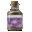
- Пустая бутылка. Лук-батун — 60 % за попытку, бутылка остывает 1 с.
- Житель мода. Торговец Потусторонних (если выпадет среди его товаров) — 7–15 алмазов.
Глаза осьминога
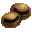
- Житель мода. Торговец Потусторонних (если выпадет среди его товаров) — 7–15 алмазов.
- Существо мода. Мурлок (водится: океаны) — 3,7 % за убийство.
Дикая роза
 Дикая роза. Нужен в зельях: Ошибка 7, Тьма 1.
Дикая роза. Нужен в зельях: Ошибка 7, Тьма 1.
- Блок. Розовый куст (ножницами; биом «лес») — 30 % за блок.
- Житель мода. Торговец Потусторонних (если выпадет среди его товаров) — 7–15 алмазов.
- Житель мода. Священник Вечной Ночи (если выпадет среди его товаров) — 7–15 алмазов.
- Существо мода. Безголовая невеста (водится: Мир духов) — 0,49 % за убийство.
Древний бортовой журнал
Древний бортовой журнал. Нужен в зельях: Тиран 7 — главный.
- Житель мода. Торговец Потусторонних (если выпадет среди его товаров) — 7–15 алмазов.
- Существо мода. Кролик знаний (водится: Мир духов) — 33 % за убийство.
Железа огненной саламандры
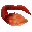
- Добыча. Магмовый куб (размер 2 и больше) — 8 % за убийство игроком.
- Житель мода. Торговец Потусторонних (если выпадет среди его товаров) — 7–15 алмазов.
- Существо мода. Каменный голем (водится: весь верхний мир) — 8,9 % за убийство.
Засохшая виноградная лоза
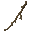
- Крафт. Костёр.
- Житель мода. Торговец Потусторонних (если выпадет среди его товаров) — 7–15 алмазов.
Звёздная вода с места ритуала
 Звёздная вода с места ритуала. Нужен в зельях: Тьма 7, Дверь 3.
Звёздная вода с места ритуала. Нужен в зельях: Тьма 7, Дверь 3.
- Крафт. Верстак.
- Житель мода. Торговец Потусторонних (если выпадет среди его товаров) — 7–15 алмазов.
- Житель мода. Священник Вечной Ночи (если выпадет среди его товаров) — 7–15 алмазов.
- Сундук. Постройки Мира духов — 34 %.
- Существо мода. Погибель (водится: Мир духов; приходит и Ночью Мира духов) — 9,9 % за убийство.
Истинный корень туманного трента
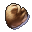
- Блок. Мангровые корни (во время дождя; только природный блок) — 5 % за блок.
- Житель мода. Торговец Потусторонних (если выпадет среди его товаров) — 7–15 алмазов.
- Существо мода. Каменный голем (водится: весь верхний мир) — 8,9 % за убийство.
Красный гребень Петуха рассвета
Красный гребень Петуха рассвета. Нужен в зельях: Солнце 7 — главный.
- Житель мода. Торговец Потусторонних (если выпадет среди его товаров) — 7–15 алмазов.
- Житель мода. Священник Вечного Палящего Солнца (если выпадет среди его товаров) — 7–15 алмазов.
- Существо мода. Дервиш (водится: Мир духов; приходит и Ночью Мира духов) — 22 % за убийство.
Кристалл божественного благословения
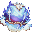
- Житель мода. Торговец Потусторонних (если выпадет среди его товаров) — 7–15 алмазов.
- Сундук. Древний город, Древний город (ледник) — 20 %.
- Сундук. Постройки Мира духов — 24 %.
- Существо мода. Синий чародей (водится: Мир духов; приходит и Ночью Мира духов) — 15 % за убийство.
Кристалл Мира духов
 Кристалл Мира духов. Нужен в зельях: Смерть 7 — главный.
Кристалл Мира духов. Нужен в зельях: Смерть 7 — главный.
- Крафт. Верстак.
- Житель мода. Торговец Потусторонних (если выпадет среди его товаров) — 7–15 алмазов.
- Сундук. Постройки Мира духов — 26 %.
- Существо мода. Мрачный Жнец (водится: Мир духов, Подземный мир; приходит и Ночью Мира духов) — 17 % за убийство.
Кровь Зеркального дракона
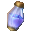
- Пустая бутылка. Светящийся спрут — 40 % за попытку, бутылка остывает 5 с.
- Житель мода. Торговец Потусторонних (если выпадет среди его товаров) — 7–15 алмазов.
- Существо мода. Демон знания (водится: Мир духов, океаны; приходит и Ночью Мира духов) — 19 % за убийство.
Кровь сфинкса
 Кровь сфинкса. Нужен в зельях: Ошибка 7, Тьма 2.
Кровь сфинкса. Нужен в зельях: Ошибка 7, Тьма 2.
- Пустая бутылка. Верблюд — 40 % за попытку, бутылка остывает 10 с.
- Житель мода. Торговец Потусторонних (если выпадет среди его товаров) — 7–15 алмазов.
- Житель мода. Священник Вечной Ночи (если выпадет среди его товаров) — 7–15 алмазов.
- Существо мода. Демон знания (водится: Мир духов, океаны; приходит и Ночью Мира духов) — 2,9 % за убийство.
Лепестки эльфийского цветка
Лепестки эльфийского цветка. Нужен в зельях: Бездна 1, Зритель 7.
- Блок. Цветок хоруса — 20 % за блок.
- Житель мода. Торговец Потусторонних (если выпадет среди его товаров) — 7–15 алмазов.
Лунный камень
 Лунный камень. Нужен в зельях: Ошибка 7, Тьма 2.
Лунный камень. Нужен в зельях: Ошибка 7, Тьма 2.
- Блок. Руда незерского кварца (только природный блок) — 12 % за блок.
- Житель мода. Торговец Потусторонних (если выпадет среди его товаров) — 7–15 алмазов.
- Житель мода. Священник Вечной Ночи (если выпадет среди его товаров) — 7–15 алмазов.
- Сундук. Постройки Мира духов — 24 %.
- Существо мода. Полупрозрачный чародей (водится: Мир духов; приходит и Ночью Мира духов) — 2,2 % за убийство.
Метеоритный кристалл
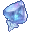
- Крафт. Верстак.
- Житель мода. Торговец Потусторонних (если выпадет среди его товаров) — 7–15 алмазов.
- Сундук. Постройки Мира духов — 35 %.
- Существо мода. Полупрозрачный чародей (водится: Мир духов; приходит и Ночью Мира духов) — 20 % за убийство.
Мозг сфинкса
Мозг сфинкса. Нужен в зельях: Красный Жрец 6 — главный, Ошибка 7 — главный.
- Житель мода. Торговец Потусторонних (если выпадет среди его товаров) — 7–15 алмазов.
- Сундук. Пустынный храм — 25 %.
- Существо мода. Демон знания (водится: Мир духов, океаны; приходит и Ночью Мира духов) — 19 % за убийство.
Плод Древа старейшин
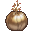
- Житель мода. Торговец Потусторонних (если выпадет среди его товаров) — 7–15 алмазов.
- Сундук. Лесной особняк — 20 %.
- Существо мода. Синий чародей (водится: Мир духов; приходит и Ночью Мира духов) — 15 % за убийство.
Порошок ломоноса
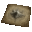
- Блок. Хаустония серая (ножницами) — 25 % за блок.
- Житель мода. Торговец Потусторонних (если выпадет среди его товаров) — 7–15 алмазов.
Порошок магмового пироксена
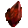
- Крафт. Верстак.
- Житель мода. Торговец Потусторонних (если выпадет среди его товаров) — 7–15 алмазов.
- Сундук. Постройки Мира духов — 27 %.
- Существо мода. Каменный голем (водится: весь верхний мир) — 0,98 % за убийство.
Порошок мухи Фейнапоттер
 Порошок мухи Фейнапоттер. Нужен в зельях: Демонесса 5, Демонесса 6, Смерть 7.
Порошок мухи Фейнапоттер. Нужен в зельях: Демонесса 5, Демонесса 6, Смерть 7.
- Блок. Пчелиное гнездо (только природный блок) — 20 % за блок.
- Житель мода. Торговец Потусторонних (если выпадет среди его товаров) — 7–15 алмазов.
- Существо мода. Безголовая невеста (водится: Мир духов) — 7,2 % за убийство.
Порошок пальчатого цитрона
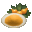
- Крафт. Верстак.
- Житель мода. Торговец Потусторонних (если выпадет среди его товаров) — 7–15 алмазов.
- Житель мода. Священник Вечного Палящего Солнца (если выпадет среди его товаров) — 7–15 алмазов.
- Существо мода. Гнойная рука (водится: Мир духов) — 14 % за убийство.
Порошок самоцвета-капли
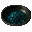
- Крафт. Верстак.
- Житель мода. Торговец Потусторонних (если выпадет среди его товаров) — 7–15 алмазов.
- Сундук. Постройки Мира духов — 24 %.
- Существо мода. Полупрозрачный чародей (водится: Мир духов; приходит и Ночью Мира духов) — 20 % за убийство.
Прах озёрного духа
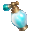
- Блок. Глина (лопатой; только природный блок) — 12 % за блок.
- Житель мода. Торговец Потусторонних (если выпадет среди его товаров) — 7–15 алмазов.
- Сундук. Постройки Мира духов — 24 %.
- Существо мода. Полупрозрачный чародей (водится: Мир духов; приходит и Ночью Мира духов) — 11 % за убийство.
Рог чёрной змеи с узором-вспышкой
Рог чёрной змеи с узором-вспышкой. Нужен в зельях: Судья 4, Судья 7, Судья 6.
- Крафт. Верстак.
- Житель мода. Торговец Потусторонних (если выпадет среди его товаров) — 7–15 алмазов.
- Сундук. Постройки Мира духов — 24 %.
- Существо мода. Злоуст (водится: Мир духов; приходит и Ночью Мира духов) — 6,7 % за убийство.
Семена белой горчицы
 Семена белой горчицы. Нужен в зельях: Тьма 7, Дверь 3.
Семена белой горчицы. Нужен в зельях: Тьма 7, Дверь 3.
- Добыча. Кадавр (убить игроком) — 6 % за убийство.
- Сундук. Пустынный храм — 35 %.
- Житель мода. Торговец Потусторонних (если выпадет среди его товаров) — 7–15 алмазов.
- Житель мода. Священник Вечной Ночи (если выпадет среди его товаров) — 7–15 алмазов.
Сердце ворона-пожирателя снов
 Сердце ворона-пожирателя снов. Нужен в зельях: Тьма 7 — главный.
Сердце ворона-пожирателя снов. Нужен в зельях: Тьма 7 — главный.
- Добыча. Разбойник — 8 % за убийство игроком.
- Добыча. Поборник — 8 % за убийство игроком.
- Житель мода. Торговец Потусторонних (если выпадет среди его товаров) — 7–15 алмазов.
- Житель мода. Священник Вечной Ночи (если выпадет среди его товаров) — 7–15 алмазов.
- Существо мода. Демон знания (водится: Мир духов, океаны; приходит и Ночью Мира духов) — 25 % за убийство.
Слизь колонии душезачаровывающих насекомых
 Слизь колонии душезачаровывающих насекомых. Нужен в зельях: Ошибка 7, Тьма 2.
Слизь колонии душезачаровывающих насекомых. Нужен в зельях: Ошибка 7, Тьма 2.
- Крафт. Верстак.
- Житель мода. Торговец Потусторонних (если выпадет среди его товаров) — 7–15 алмазов.
- Житель мода. Священник Вечной Ночи (если выпадет среди его товаров) — 7–15 алмазов.
- Сундук. Постройки Мира духов — 26 %.
- Существо мода. Гнойная рука (водится: Мир духов) — 2,9 % за убийство.
Солнечное эфирное масло
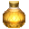
- Крафт. Верстак.
- Житель мода. Торговец Потусторонних (если выпадет среди его товаров) — 7–15 алмазов.
- Житель мода. Священник Вечного Палящего Солнца (если выпадет среди его товаров) — 7–15 алмазов.
Целестин
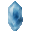
- Блок. Лазуритовая руда, Глубинносланцевая лазуритовая руда (только природный блок) — 12 % за блок.
- Житель мода. Торговец Потусторонних (если выпадет среди его товаров) — 7–15 алмазов.
- Сундук. Постройки Мира духов — 22 %.
- Существо мода. Каменный голем (водится: весь верхний мир) — 4,8 % за убийство.
Целые остатки волос суккуба
 Целые остатки волос суккуба. Нужен в зельях: Демонесса 5, Демонесса 6, Смерть 7.
Целые остатки волос суккуба. Нужен в зельях: Демонесса 5, Демонесса 6, Смерть 7.
- Крафт. Верстак.
- Житель мода. Торговец Потусторонних (если выпадет среди его товаров) — 7–15 алмазов.
- Существо мода. Безголовая невеста (водится: Мир духов) — 7,2 % за убийство.
Чужие слёзы о разбитых идеалах
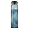
- Пустая бутылка. Плачущий обсидиан — 100 % за попытку, бутылка остывает 10 с.
- Житель мода. Торговец Потусторонних (если выпадет среди его товаров) — 7–15 алмазов.
Экстракт солнечной звезды
Экстракт солнечной звезды. Нужен в зельях: Красный Жрец 7, Красный Жрец 5, Бездна 7, Красный Жрец 3, Красный Жрец 2.
- Крафт. Верстак.
- Житель мода. Торговец Потусторонних (если выпадет среди его товаров) — 7–15 алмазов.
- Существо мода. Погибель (водится: Мир духов; приходит и Ночью Мира духов) — 5 % за убийство.
Эфирное масло травы грёз
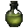
- Крафт. Верстак.
- Житель мода. Торговец Потусторонних (если выпадет среди его товаров) — 7–15 алмазов.
Яйцо агатового павлина
 Яйцо агатового павлина. Нужен в зельях: Демонесса 7 — главный.
Яйцо агатового павлина. Нужен в зельях: Демонесса 7 — главный.
- Крафт. Верстак.
- Житель мода. Торговец Потусторонних (если выпадет среди его товаров) — 7–15 алмазов.
- Существо мода. Безголовая невеста (водится: Мир духов) — 13 % за убийство.